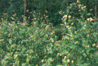
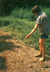
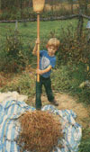
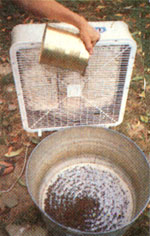

Buckwheat is easy to grow-in fact, it's unequaled at growing on poor soil. . cut the stems with grass shears when about threequarters of the seeds have turned brown . . . . Threshing the seeds is fun: Just lay the stalks on a clean sheet and beat them with a broom!
Buckwheat is one of the best sources of highquality protein in the plant kingdom. It's easy to grow, harvest, and process; it prospers on soils too poor for other crops; and it's not susceptible to any major disease or pest problems. On top of all that, buckwheat is an excellent smother crop for weed control, a superb green manure crop, and a legendary nectar source for honeybees.
Yet few gardeners use it! In all the years we've planted buckwheat for bread and pancake flour, we've never heard of any other gardener raising the crop. So this article is our chance to speak up for an old friend, one that has served us faithfully . . . providing fine flavor and wholesome nutrition while asking for just a little care in return. We think buckwheat is the backyard grainyou can bring in a usable harvest from as little as 40 square feet! It well deserves a place in American gardens.
This quick-blooming crop doesn't like hot, dry weather and is produced commercially only in the northern states. Still, while high temperatures-particularly at night can reduce yields by causing flowers to "blast" (fall off without forming seed), buckwheat's long period of bloom.generally ensures at least a moderate crop even when it's planted as far south as Tennessee. At our location in south central Kentucky, we've experienced some losses in August heat, but these have been followed by excellent seed formation during cooler periods in September.
Buckwheat is also quite tolerant of acidic conditions-there's little to be gained by adding lime to the soil. What's more, soluble nitrogen fertilizer is definitely not recommended for buckwheat, because it can cause the plant to favor vegetative, rather than seed, growth. However, buckwheat does respond well to nutrients supplied by the natural breakdown of organic materials. Winter cover crops such as rye and hairy vetchplowed under as green manure-are excellent for maintaining soil fertility where buckwheat is grown.
Unfortunately, seed of the few good buckwheat varieties can be quite difficult to locate. Most likely, your local farm supply store can provide you with "common" buckwheat, which is OK but nothing special. The same goes for the few mail-order houses selling buckwheat seed (see source list).
If that's the best you can find, go with it. But there are a few certified varieties available in states with commercial buckwheat growers. For example, the Minnesota Crop Improvement Association supervises production of Mancan and Giant American seed. Your local county extension agent might be able to connect you with a source of these seeds.
In most areas, the best time to sow buckwheat is about three months before the first expected killing frost: The idea is to plant as late as possible to avoid high temperatures during much of the period of seed formation. Most northeastern growers, then, would sow during the last week of June, while southerners would plant a bit later. In a pinch, you can sow as late as two months before the first expected frost and still expect some yield.
Buckwheat does not need very finely worked soil, although numerous studies have shown that early seedbed preparation promotes high yields. In our experience, this grain loves to follow an early pea crop. We broadcast the seed by hand at a rate of between two and four pounds per thousand square feet, and cover it by lightly raking the sown area.
The seedlings emerge within a few days with two heart-shaped leaves. Growth is amazingly rapid-the plants start flowering in little over a week! As the seeds develop, they change color from green to dark brownblack. Because buckwheat blooms indeterminately (over a period of time), late in the season the plants will have flowers as well as both ripe and unripe seeds.
When about three-quarters of the seeds have become dark brown, we cut the stems near the ground with grass shears. We always harvest before the first killing frost; otherwise the foliage will collapse in a tangled mass and many of the seeds will "shatter" (fall off the plant). Even before frost, the most mature seeds shatter easily, so we try to be gentle when harvesting.
Threshing buckwheat is fun-our kids love it! We simply lay some plants on a sheet and beat them several times with a clean broom, turning the stalks over frequently. Conveniently, the unripe green seeds remain attached to the stalks, while the ripe ones fall onto the sheet. Then we transfer the separated seeds-plus a considerable amount of chaff and other debris-to a container and use the stalks as organic mulch.
The next step is cleaning the seed. We've had excellent results by simply pouring it slowly in front of a window fan that's running at high speed. This must be repeated several times.
We grind buckwheat in a small stone-burr mill, but a blender could be used to process small quantities. The seed hulls (pericarps) slip off during grinding and are easily sifted out of the ground flour.
Making buckwheat pancakes-from a 50:50 mix of buckwheat and whole wheat flour-is our favorite use for the finished product. However, adding up to 20% buckwheat flour to a whole wheat bread recipe is rewarding, too, and boosts-the nutritional quality of the bread considerably. As several studies have shown, the amino acid composition of buckwheat flour is on a par with that of animal protein. And buckwheat contains a high level of protein, up to 12%. Furthermore, while most cereal grains have limited amounts of the essential amino acid lysine, buckwheat has abundant lysine, so it complements cereal proteins well.
Regardless of the nutritional advantages of buckwheat, though, we're sold on its unique flavor! Buckwheat pancakes, bread, and even noodles, (made with a crank-type noodle maker) are here to stay in our household. And since this grain is so easy to grow and harvest, it's here to stay in our garden, as well!
|
 |
 |
 |
|
 |
|
|